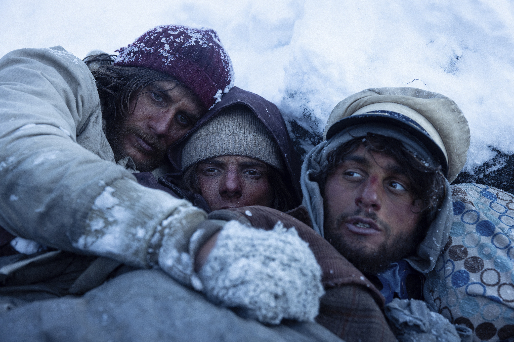
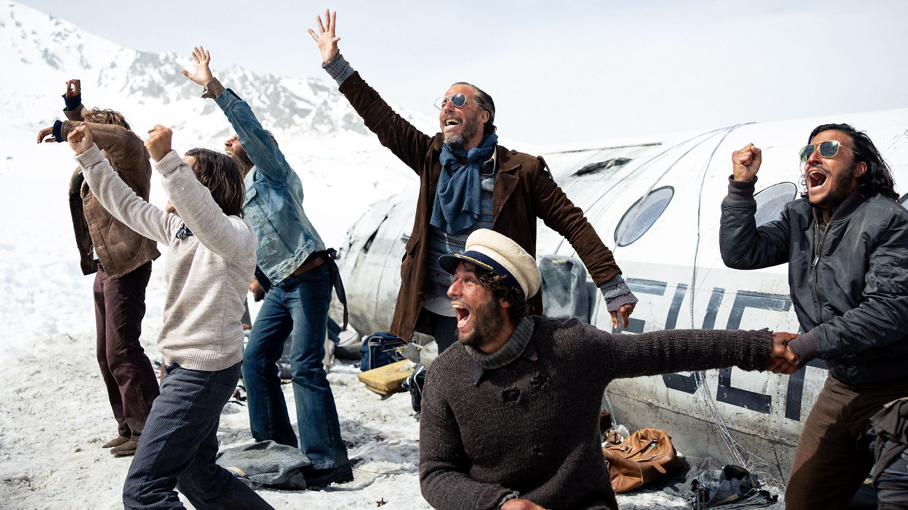

INTRODUCCIÓN
"La sociedad de la nieve" es una película española de 2023 dirigida por Juan Antonio Bayona ("Lo imposible", "Un monstruo viene a verme") y basada en el libro "La sociedad de la nieve: Los 16 días que conmovieron al mundo" de Pablo Vierci. La película narra la historia real d el accidente del vuelo 571 de la Fuerza Aérea Uruguaya, que se estrelló en los Andes en 1972. La película sigue la lucha por la supervivencia de los 29 sobrevivientes del accidente, que se vieron obligados a pasar 72 días en las montañas nevadas antes de ser rescatados. 
SINOPSIS
El accidente:
El 13 de octubre de 1972, un avión que transportaba a un equipo de rugby uruguayo y a sus familiares se estrella en los Andes. El impacto es brutal y muchos de los pasajeros mueren al instante. Los 29 sobrevivientes se encuentran en una situación desesperada, atrapados en un entorno hostil y sin ayuda a la vista.Primeros días:
Los primeros días son los más difíciles. Los sobrevivientes están heridos, desorientados y conmocionados. No tienen comida ni agua, y las temperaturas son extremadamente bajas. Algunos de ellos mueren en las primeras horas debido a sus heridas o a la exposición al frío.La organización:
Los sobrevivientes se dan cuenta de que para sobrevivir deben organizarse. Eligen a un líder, Nando Parrado, y comienzan a racionar la comida y el agua. También construyen un refugio para protegerse del frío y del viento.búsqueda de ayuda:
Los sobrevivientes saben que su única esperanza de rescate es encontrar una manera de pedir ayuda. Envían a dos hombres a buscar un camino hacia la civilización, pero no regresan.decisión de descender:
Tras 60 días en las montañas, los sobrevivientes toman la decisión de descender por la cordillera. Es una decisión arriesgada, pero saben que es su única posibilidad de sobrevivir.El rescate:
Después de una caminata de 10 días, los sobrevivientes finalmente encuentran un valle habitado. Son rescatados por un grupo de arrieros chilenos.Las consecuencias:
El accidente del vuelo 571 de la Fuerza Aérea Uruguaya fue una tragedia, pero también una historia de supervivencia y esperanza. Los 29 sobrevivientes se convirtieron en un símbolo de la fuerza del espíritu humano.REPARTO
- Enzo Vogrincic como Numa Turcatti
- Agustín Pardella como Nando Parrado
- Andy Pruss como Roy Harley
- Matías Recalt como Roberto Canessa
- Tomás Wolf como Gustavo Zerbino
- Diego Vegezzi como Marcelo Pérez del Castillo
- Fernando Contigiani como Arturo Nogueira

PREMIOS
- Nominada a los Premios Oscar a la Mejor Película Extranjera, Mejor Maquillaje y Peinado, y Mejor Guion Adaptado.
- Ganadora del Premio Goya a la Mejor Película, Mejor Dirección, Mejor Actor Revelación y Mejor Maquillaje y Peluquería.
RECEPCIÓN
"La sociedad de la nieve" ha sido aclamada por la crítica por su dirección, actuaciones, guion y efectos visuales. La película ha sido elogiada por su realismo y por su capacidad para capturar la experiencia de los sobrevivientes del accidente.
TEMAS
- Supervivencia
- Esperanza
- Amistad
- Espíritu humano
- Liderazgo
- Organización
CONCLUSIÓN
"La sociedad de la nieve" es más que una simple película de supervivencia. Es una historia que nos recuerda la fuerza del espíritu humano y la importancia de valores como la esperanza, la solidaridad y el sacrificio. En el corazón de la película se encuentra la idea de que la cooperación y el trabajo en equipo son esenciales para superar las dificultades. Los sobrevivientes del accidente solo pudieron sobrevivir uniéndose y trabajando juntos para encontrar comida, refugio y una manera de pedir ayuda. La película también destaca la importancia de la esperanza. Incluso en los momentos más oscuros, los sobrevivientes nunca se rindieron. Se aferraron a la esperanza de que serían rescatados, y esta esperanza les dio la fuerza para seguir adelante. "La sociedad de la nieve" también es una historia sobre el sacrificio. Los sobrevivientes se vieron obligados a tomar decisiones difíciles para mantenerse con vida. Algunos de ellos tuvieron que sacrificar sus propias necesidades para el bien del grupo. La película nos deja con un mensaje poderoso: incluso en las situaciones más extremas, el espíritu humano puede brillar. La esperanza, la solidaridad y el sacrificio pueden ayudarnos a superar cualquier obstáculo.
